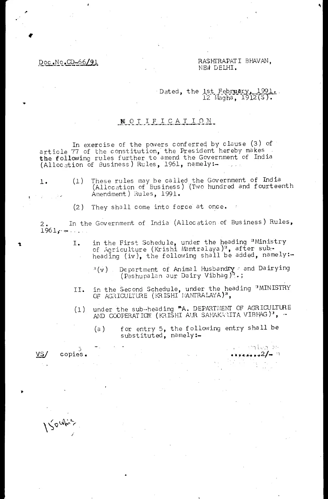
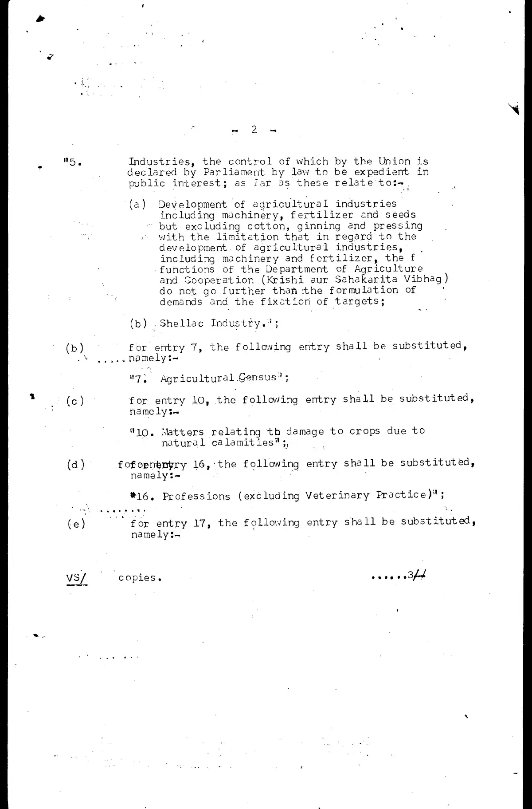
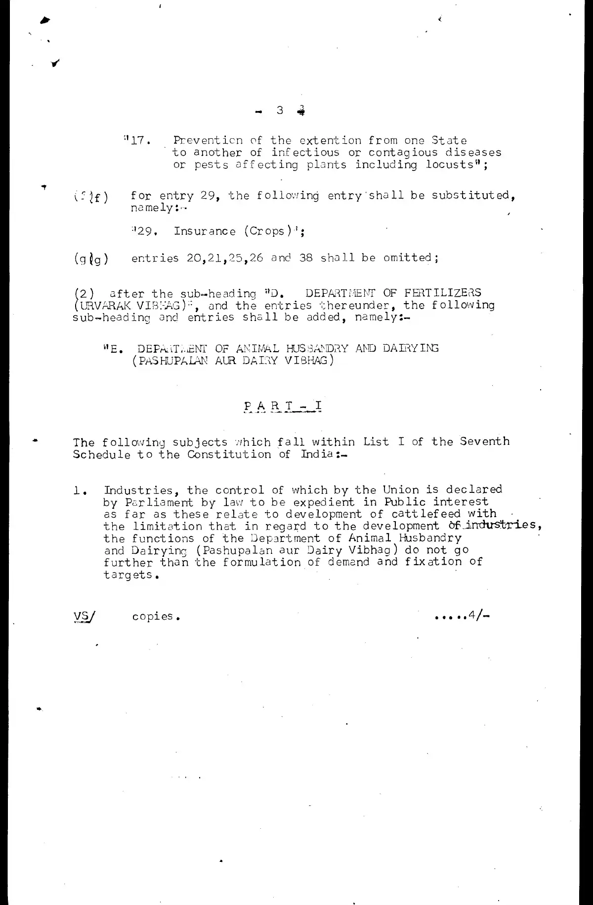
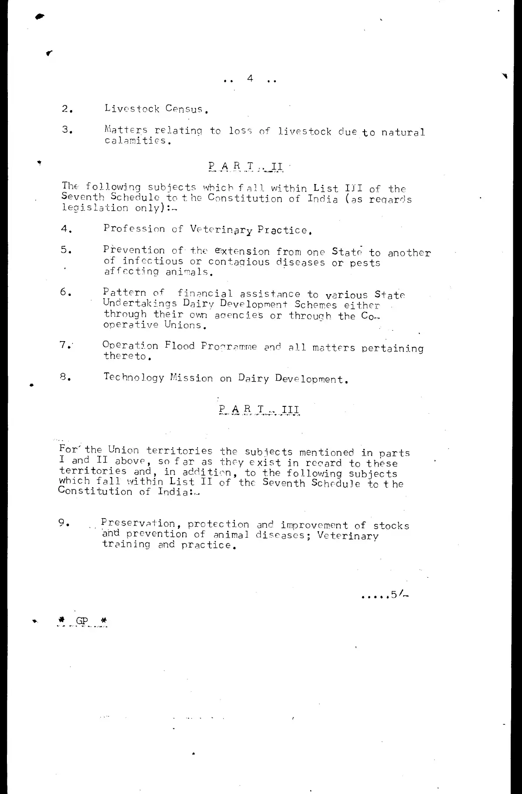
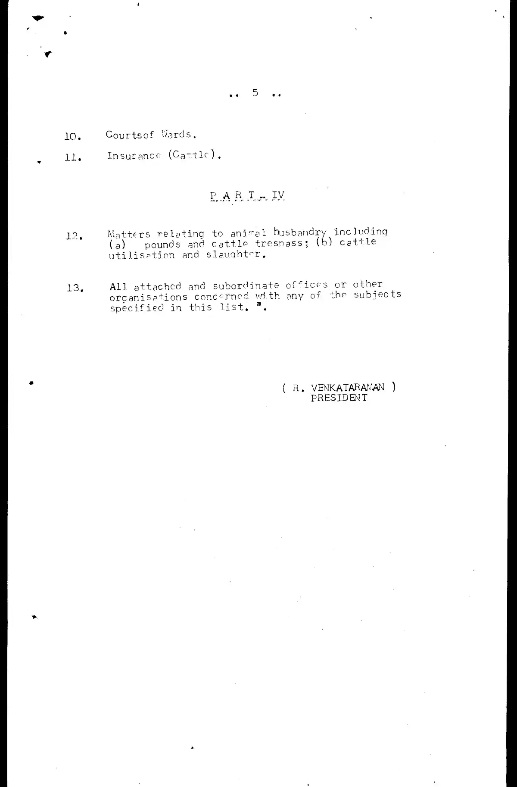

Amendment #214 (S.O. 52(E), 1991)
9 changes: 1 to the First Schedule, 8 to the Second Schedule. 9 applied
The order, page by page
Page 1 of 5

12after Schedule 1 › Ministry of Agriculture › department iv
- v. Department of Animal Husbandry and Dairying
applied at schedule 1 › ministry 1 › department v in the Rules after #214
Schedule 2 › MINISTRY OF AGRICULTURE › DEPARTMENT OF AGRICULTURE AND COOPERATION › entry 5
- 5. Industries, the control of which by the Union is declared by Parliament by law to be expedient in public interest%;B as far as these relate to:-
- a. Development of agricultural industries including machinery, fertilizer and seeds but excluding cotton, ginning and pressing with the limitation that in regard to the development of agricultural industries including machinery and fertilizer, the f functions of the Department of Agriculture and…
- b. Shellac Industry.
applied at schedule 2 › ministry MINISTRY OF AGRICULTURE › department A › part I › entry 5 in the Rules after #214
Page 2 of 5

3456Schedule 2 › MINISTRY OF AGRICULTURE › DEPARTMENT OF AGRICULTURE AND COOPERATION › entry 7
- 7. Agricultural Census
applied at schedule 2 › ministry MINISTRY OF AGRICULTURE › department A › part I › entry 7 in the Rules after #214
Schedule 2 › MINISTRY OF AGRICULTURE › DEPARTMENT OF AGRICULTURE AND COOPERATION › entry 10
- 10. Matters relating to damage to crops due to natural calamities
applied at schedule 2 › ministry MINISTRY OF AGRICULTURE › department A › part I › entry 10 in the Rules after #214
Schedule 2 › MINISTRY OF AGRICULTURE › DEPARTMENT OF AGRICULTURE AND COOPERATION › entry 16
- 16. Professions (excluding Veterinary Practice)
applied at schedule 2 › ministry MINISTRY OF AGRICULTURE › department A › part II › entry 16 in the Rules after #214
Schedule 2 › MINISTRY OF AGRICULTURE › DEPARTMENT OF AGRICULTURE AND COOPERATION › entry 17
- 17. Prevention of the extention from one State to another of infectious or contagious diseases or pests affecting plants including locusts
applied at schedule 2 › ministry MINISTRY OF AGRICULTURE › department A › part II › entry 17 in the Rules after #214
Page 3 of 5

789Schedule 2 › MINISTRY OF AGRICULTURE › DEPARTMENT OF AGRICULTURE AND COOPERATION › entry 29
- 1129. Insurance (Crops)*
applied at schedule 2 › ministry MINISTRY OF AGRICULTURE › department A › part III › entry 29 in the Rules after #214
Schedule 2 › MINISTRY OF AGRICULTURE › DEPARTMENT OF AGRICULTURE AND COOPERATION › entry 26; Schedule 2 › MINISTRY OF AGRICULTURE › DEPARTMENT OF AGRICULTURE AND COOPERATION › entry 26; Schedule 2 › MINISTRY OF AGRICULTURE › DEPARTMENT OF AGRICULTURE AND COOPERATION › entry 26; Schedule 2 › MINISTRY OF AGRICULTURE › DEPARTMENT OF AGRICULTURE AND COOPERATION › entry 26; Schedule 2 › MINISTRY OF AGRICULTURE › DEPARTMENT OF AGRICULTURE AND COOPERATION › entry 38
applied at schedule 2 › ministry MINISTRY OF AGRICULTURE › department A › part III › entry 26 in the Rules after #214
after Schedule 2 › MINISTRY OF AGRICULTURE › DEPARTMENT OF FERTILIZERS
- E. DEPARTMENT OF ANIMAL HUSBANDRY AND DAIRY ING PART - I
- 1. 43-4 The following subjects which fall within List I of the Seventh Schedule to the Constitution of India:-
- 1. Industries, the control of which by the Union is declared by Parliament by law to be expedient in Public interest as far as these relate to development of cattlefeed with the limitation that in regard to the development of industries the functions of the Department of Animal Husbandry and Dairying…
- 2. Livestock Census.
- 3. Matters relating to loss of livestock due to natural calamities.
- II. PART II
and 11 more
- 4. Profession of Veterinary Practice.
- 5. Prevention of the extension from one State to another of infectious or contagious diseases or pests. affecting animals.
- 6. Pattern of financial assistance to various State Undertakings Dairy Development Schemes either through their own agencies or through the Cooperative Unions.
- 7. Operation Flood Programme and all matters pertaining thereto.
- 8. Technology Mission on Dairy Development. PART G III ALT ▼ For the Union territories the subjects mentioned in parts I and II above, so far as they exist in regard to these territories and, in addition, to the following subjects which fall within List II of the Seventh Schedule to the Constitution…
- 9. Preservation, protection and improvement of stocks. and prevention of animal diseases; Veterinary training and practice. 5/- GP * 10
- 5. .
- 10. Courts of Wards. ll. Insurance (Cattle). PART - IV
- 12. Matters relating to animal husbandry including
- a. pounds and cattle trespass; (b) cattle utilisation and slaughter.
- 13. All attached and subordinate offices or other organisations concerned with any of the subjects specified in this list. 27
applied at schedule 2 › ministry MINISTRY OF AGRICULTURE › department E in the Rules after #214
read page break
Page 4 of 5

Page 5 of 5

How this document was read
From the Government of India (Allocation of Business) Rules, 1961 and their amendments, as published by the Cabinet Secretariat (cabsec.gov.in), read by orgpedia. The readings of the older scanned gazettes have known gaps.